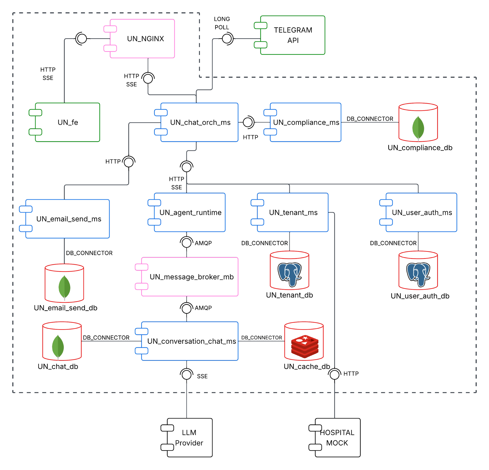
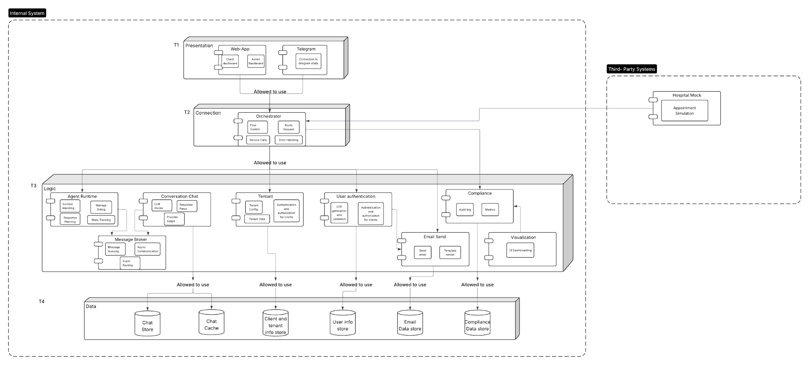
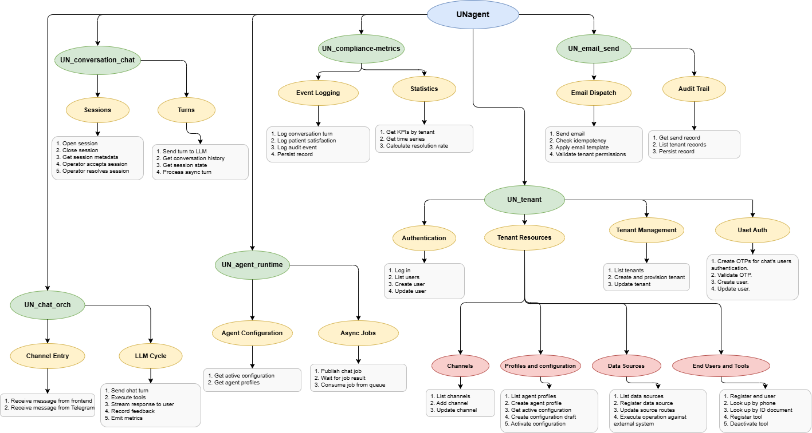
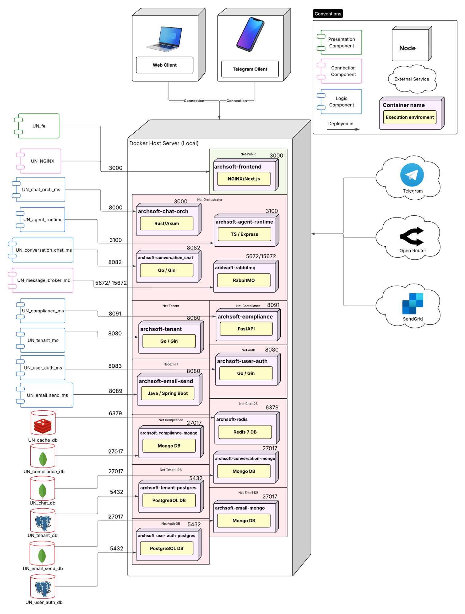
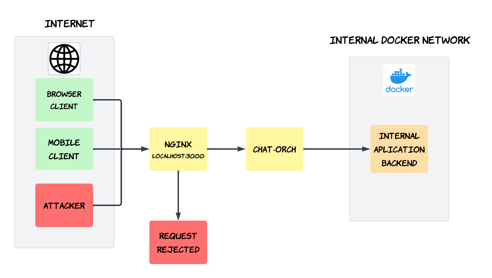
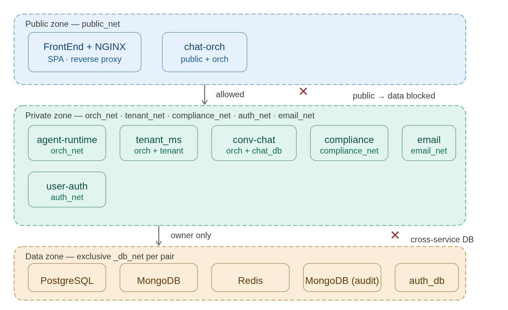
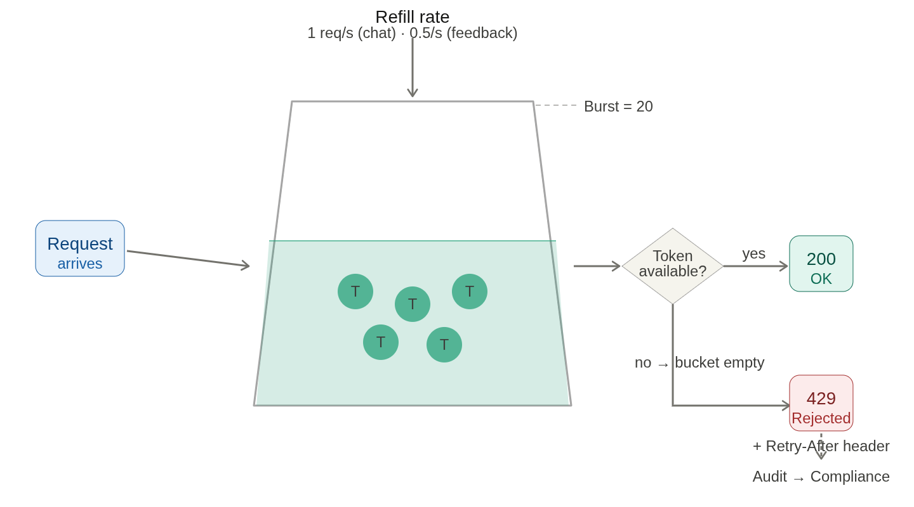
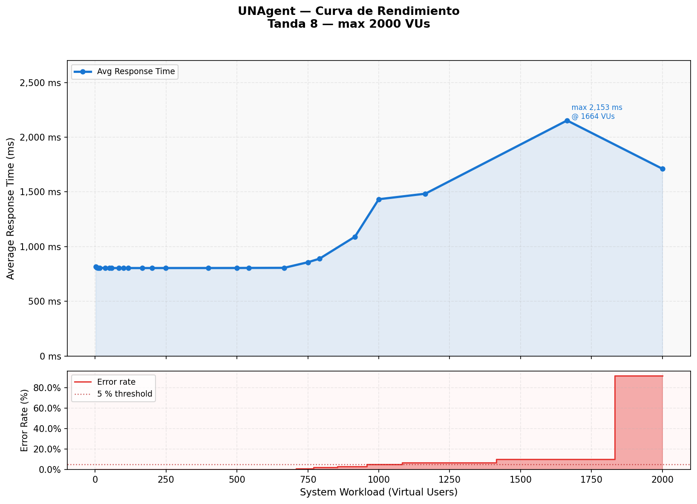

UN Agent
Asesores en Salud
Prototype 3 · Quality Attributes, Part 1
What is UN Agent
A multi-tenant conversational-AI platform that automates patient-facing appointment scheduling. Patients talk to an AI agent through a web console or a Telegram bot; the agent runs a tool-calling loop against a hospital scheduling API and streams replies token-by-token.
8 services in Rust, Go, Python, TypeScript and Java.
a Rust orchestrator (chat-orch) acting as Backend-for-Frontend.
five dedicated Docker networks (Network Segmentation).
every inter-service hop sealed with AES-256-GCM.
The team
Component & Connector view

- Frontend + NGINX — single public origin: static SPA and reverse proxy.
- chat-orch (Rust) — coordinates every chat turn as the BFF.
- agent-runtime / conversation-chat — tool-calling loop and session state.
- Connectors — HTTP/REST, SSE streaming, RabbitMQ pub/sub, private DB bindings.
Layered view

- T1 Presentation — web app and Telegram clients.
- T2 Connection — the orchestrator routes every request.
- T3 Logic — the eight microservices and the message broker.
- T4 Data — each service owns its private store.
Decomposition view

- Per-service modules — each microservice broken into cohesive units.
- Clear ownership — responsibilities mapped module by module.
- Low coupling — modules communicate only through defined interfaces.
- Database per service — no shared monolithic schema.
Deployment view

- Single host — one Docker container per service and datastore.
- Five networks — public, orchestrator, tenant, compliance, db.
- External clouds — Telegram, OpenRouter and SendGrid over WAN.
- Container-based — isolation and independent deployment per unit.
Four security countermeasures
AES-256-GCM envelope sealed on every inter-service hop.
One public origin; the internal topology stays hidden.
Five isolated Docker networks, least privilege.
Token-bucket throttle on the public endpoints.
Secure Channel
- Weakness — internal Docker traffic flowed in plaintext; a compromised container could sniff tokens and conversations.
- Countermeasure — an AES-256-GCM envelope, sealed and opened inside each service's own code, not delegated to the infrastructure.
- Result — inter-service payloads travel as ciphertext end to end; a sniffer captures nothing readable.
pub fn seal(&self, plaintext: &[u8]) -> Result<Envelope, AppError> {
let mut iv = [0u8; 12];
rand::thread_rng().fill_bytes(&mut iv);
let ciphertext = self.cipher.encrypt(&iv.into(), plaintext)?;
Ok(Envelope { iv, ciphertext }) // AES-256-GCM
}Reverse Proxy

- Weakness — backend services were directly reachable; ports and topology exposed.
- Countermeasure — an NGINX reverse proxy as the single entry point on port 3000.
- It hides internal services, strips upstream headers and centralizes traffic control.
- Result — zero internal services exposed; one controlled public surface.
Network Segmentation

- Weakness — a flat network: any compromised container could reach any database.
- Countermeasure — five Docker networks; each service joins only the ones it needs.
- Databases isolated — no host ports, invisible outside their owner's network.
- Verified —
nc -zvprobes: cross-zone DB connections fail with "bad address".
Rate Limiting

- Weakness — public endpoints had no per-client limit: LLM-cost denial-of-wallet and login brute force.
- Countermeasure — a token-bucket limiter:
/v1/chatper tenant,/auth/loginper IP. - Over the limit — HTTP 429 +
Retry-After; every rejection sent to the audit log. - Tactics — resist (limit access) · detect (audit) · recover (legit users keep service).
Performance & Scalability

- Staged load test — k6, ramping to 2000 virtual users.
- LLM isolated — replaced by an 800 ms deterministic mock, so the test measures only internal overhead.
- Stable to ~650 VUs — flat ~800 ms latency, 0% errors; collapse near 1800 VUs.
- Bottleneck — the connection-pool layer between conversation-chat and its stores, not the LLM.
Run it locally
The whole platform boots from the dev-runner umbrella repo,
which pins every service as a git submodule. Requires Docker with the
Compose plugin.
# 1. Clone with submodules
git clone --recurse-submodules git@github.com:UNagent-1D/dev-runner.git
cd dev-runner
# 2. Create the .env and fill in the API keys
cp .env.example .env
# 3. Build and run everything
docker compose up -d --build
# 4. First run only — seed the admin user
docker compose run --rm -e SEED_EMAIL=admin@demo.com \
-e SEED_PASSWORD=demo1234 tenant ./seedThen sign in at http://localhost:3000.
UN Agent
Asesores en Salud
A secure, multi-tenant conversational-AI platform.
Team 1D · Software Architecture · 2026-I